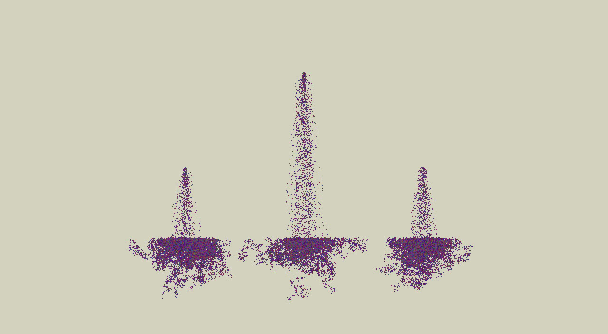
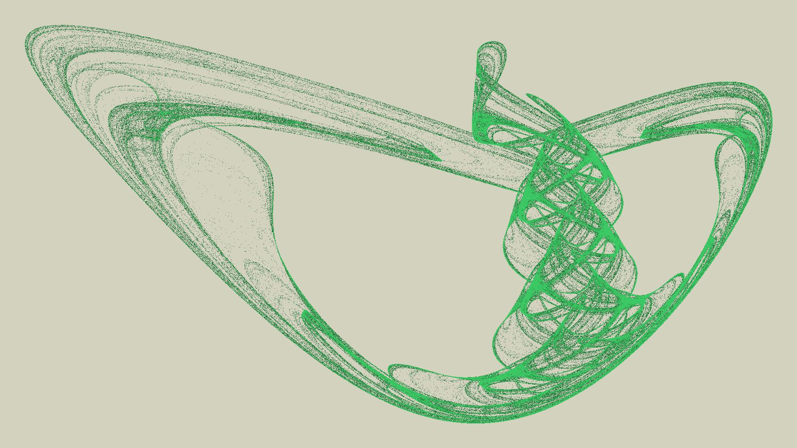
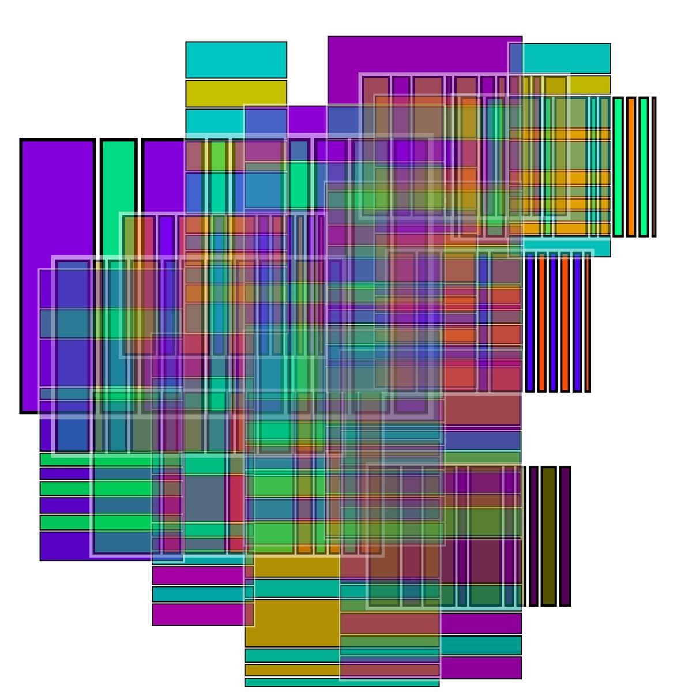
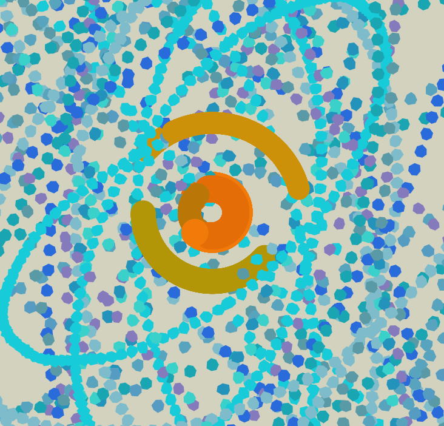

Podés pedirle a la computadora que te devuelva un número al azar millones de veces por segundo. Si se te ocurre cómo usar esos valores dentro de algoritmos que tomen decisiones podés hacer cosas muy interesantes. Acá hay algunos ejemplos...
Podés tener un conjunto de puntos en un lugar determinado y usar el azar para moverlos. No podés saber qué camino hará un punto pero podés darte una idea de la mancha que van a dejar cientos de ellos.
Podés usar la computadora para pintar el resultado de un sistema de ecuaciones. Ajustando los coeficientes de las ecuaciones al azar a veces encontrás atractores extraños.
Podés hacer un juego y que mucha gente te mande imágenes para mezclarlas después.
A veces podés difinir al azar un vector velocidad y después dejar que el dibujo lo haga la ley de la gravitación universal.
La computadora no es la única herramienta que tenemos a disposición para producir eventos al azar. ¡Los dados siempre sirven! Y, con un poco de ingenio, podemos crear un juego que nos transforme en artistas. Con un par de dados, papel y lápices de colores podés jugar escape de líneas.